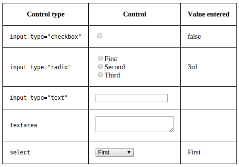
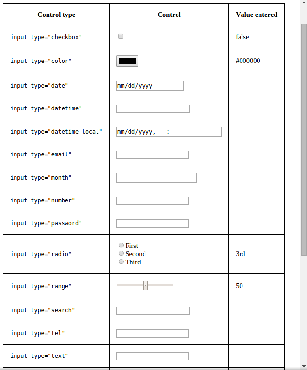
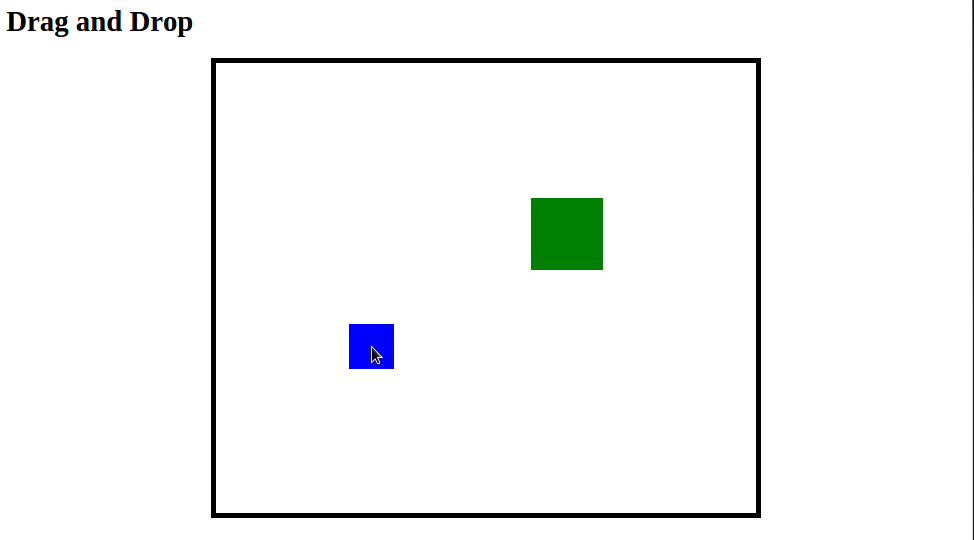

This week you have a choice: reading and displaying values from various inputs, or moving elements around with a mouse (drag and drop).
Make a table for different kinds of input elements. (This includes not just input elements per se, but also textarea and select.) In the first column, show type of input (e.g. 'input type="checkbox"'). In the second column, put an actual element of that type.
The third column is for the values entered by the user.
Your JavaScript should read and display the initial value for each input, and then handle the change event for the inputs by displaying the new value. For most inputs, you can use jQuery's val() method. An exception is checkboxes, for which you can use jQuery's prop() method.
Here's what the table might look like with just the basic inputs:

Consider expanding the table to include most of the input types HTML5 offers, including select with the multiple attribute. (Certain input types, such as buttons, don't really have values, so don't bother with those.)

Make a page where the user can drag a couple of elements around with a mouse.
Make a large div (with relative position) and put some smaller elements (with absolute position) inside of it.
Set a handler for the mousedown event on those draggable elements. It should have a variable that holds the event target (the element that was clicked on). It should also get the difference between the position of that element (its left and top CSS settings) and the mouse (the event's pageX and pageY in jQuery).
That event handler should then set event handlers for two other events: A mousemove handler should update the element's position so that the difference between that and the mouse's new position stays constant. A mouseup handler should remove those two event handlers so dragging finishes. (With jQuery, use the off method.) These handlers should be set on the entire document, rather than the target element.
Optional features: Confine the dragged elements to remain inside the outer div. Set the cursor for the draggle elements appropriately (e.g. grab).

Use Canvas to submit the URL to your Web page.